Lo vi perdido en un evento universitario. La vi hambrienta en un campamento.
Algunos recuerdos
Fuimos de paseo con la Granjita a la selva. Estamos en la comunidad de Panchamichi, donde te sacan la ... Luego regresamos en una combi, donde nos calificaron de ser tan "uouou!" (2017)
Paseo a San Jerónimo de Surco, Chosica. Dias antes del primer viaje largo a Brasil. Llegamos a la catarata donde nos tomamos más fotos. Respirabamos esperanza, exhalabamos melancolía (2017)
En nuestro paseo con la Granjita. Foto sobre una roca. (2017)
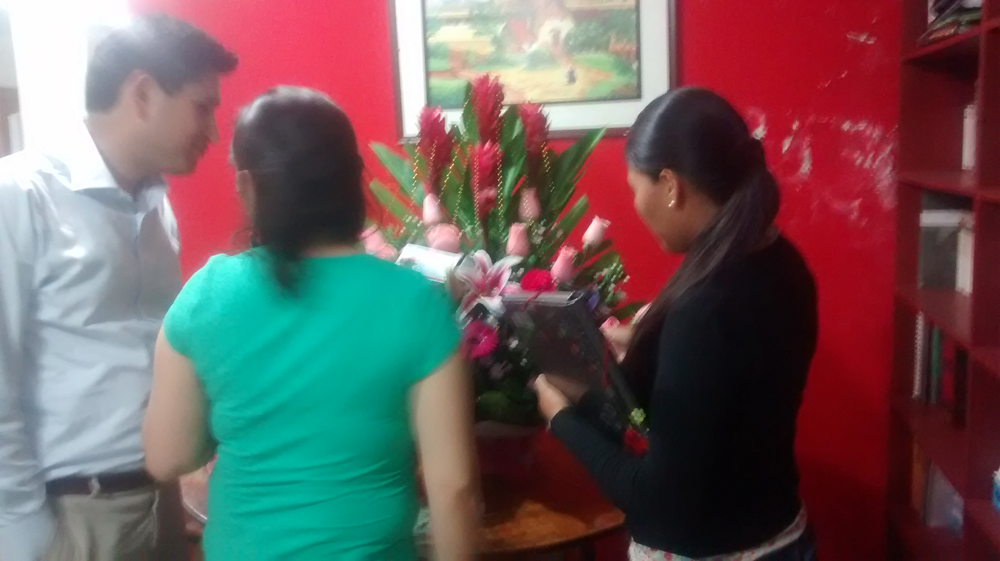
En nuestra vista a Lichi por su cumpleaños. LLevamos las flores en taxi. Lichi nos mostro sus fotos de bodas. De hecho nos debe una foto de los dos con las flores.
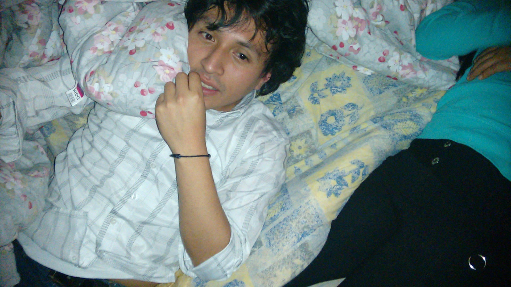
Día de peleitas en la casa de las chicas. Jugamos mucho... uyyyy hay videos.
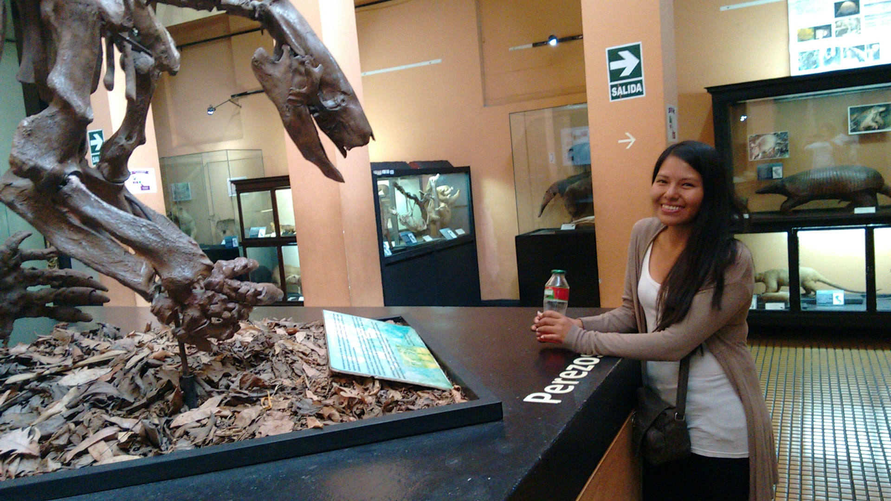
Día de cumpleaños. Sin querer queriendo entramos gratis al museo de San Marcos. Luego fuimos a Mi Tercer Lugar, por primera vez. Uno de los mejores días.
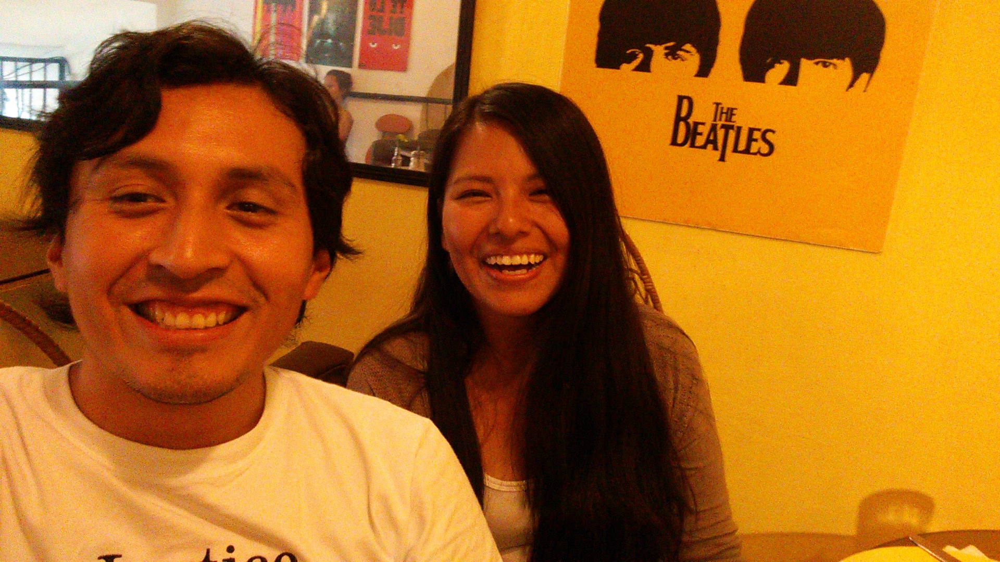
... quieres escribir?
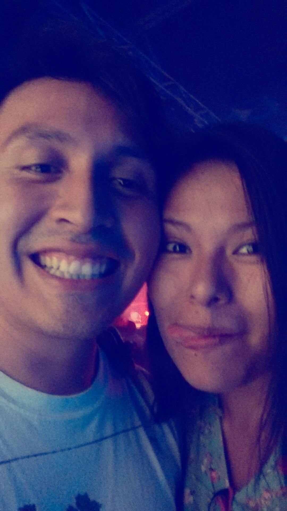
... quieres escribir?
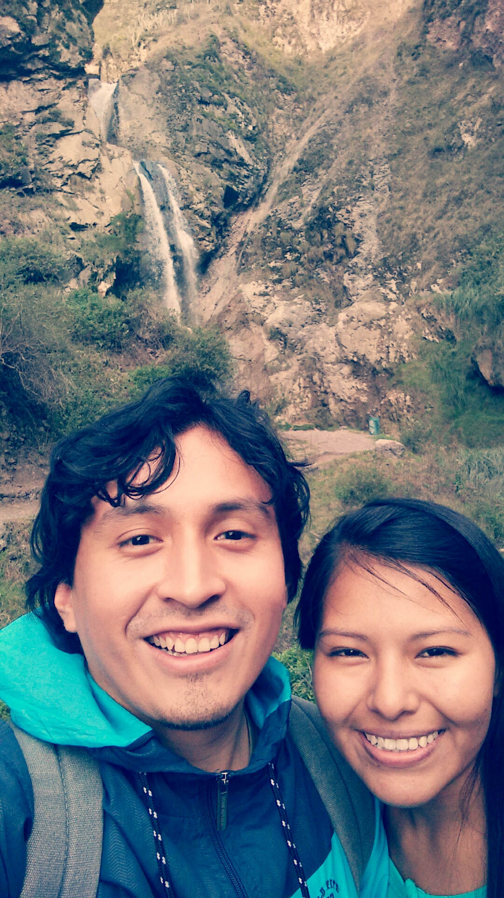
... quieres escribir?
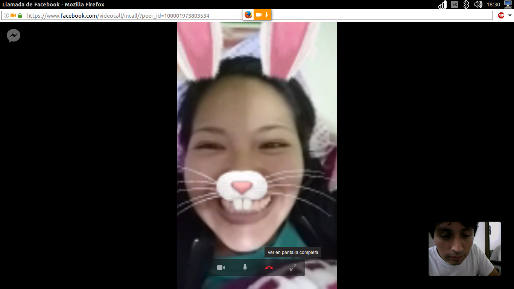
... quieres escribir?
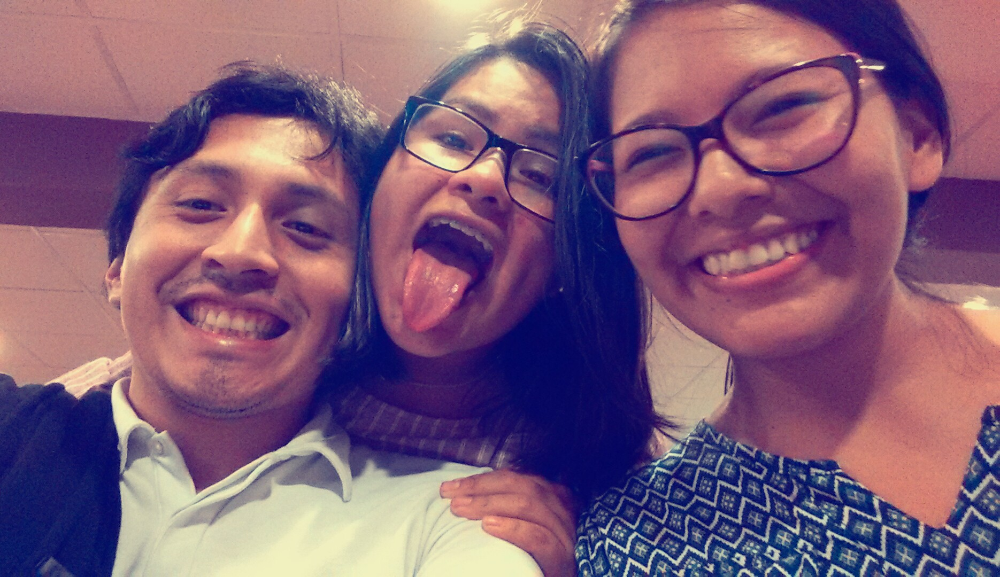
... quieres escribir?
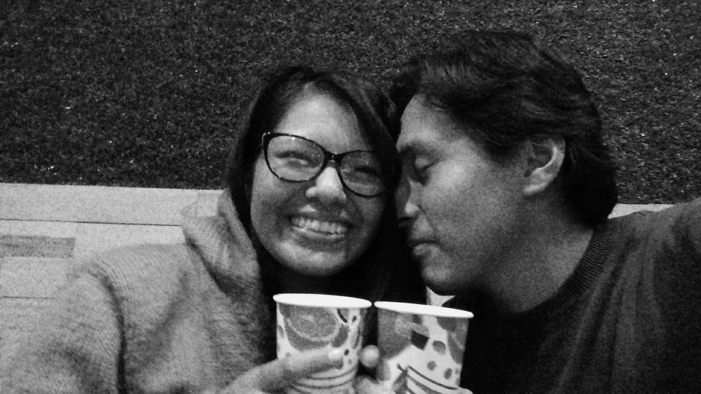
... quieres escribir?
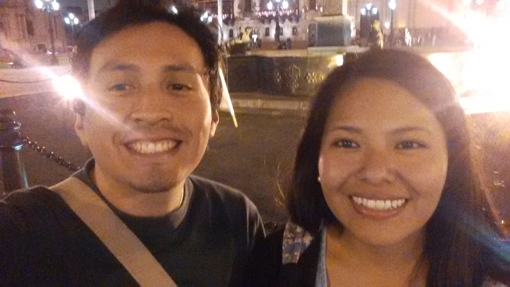
... quieres escribir?
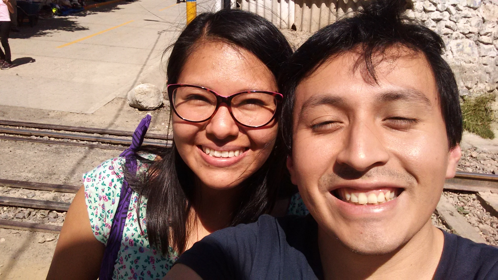
... quieres escribir?
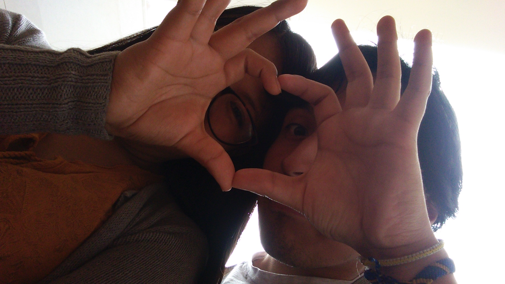
... quieres escribir?
Frases
El matrimonio es para dejar de ser egoístas y aprender a pensar en el otro (Enero, 2018).
La dificultad hace que la vida sea eso, vida, porque nos ayuda a crecer (Enero, 2018).
Palabras para ti, mi Sara
Después de todo este tiempo, me siento demasiado agradecido a Dios por tí. Por mucho he sido ingrato, desatento, desconsiderado, frío, torpe, tosco, etc. ... en fin, insuficiente para alcanzar la altura de un chico para ti. Me pongo a pensar y estoy seguro que mereces alguien mucho mejor que yo. Y por eso te agradezco, porque siendo así yo, me has querido, me has amado. Guardo todos los buenos recuerdos en mi corazón como mi mayor tesoro. Aunque existieron momentos difíciles, los momentos félices fueron muchísimos, y de maneras que no me esperaba. Te convertiste en mi mejor amiga, mi apoyo, mi confidente, la que escuchaba mis tonterías, mi respuesta, mi milagro, mi motivación. Despiertas en mi al Josué que siempre quiero ser, alguién con esperanza, alguien que pinta y corta, alguien que cobra fuerzas cuando no tiene ninguna, alguien que anda feliz, que le gusta estar con la familia y los amigos, que puede ser generoso. Tu espíritu es tan hermoso. Me enamoré de tí. Conluyo que no te merezco y que cada día, cada minuto de ti, de tu tiempo, de tu vida, de tus bromas, de tu sonrisa, de tus consejos, aún de tus golpes, y muchas cosas más, son un regalo. Pérdoname, porque generalmente lo olvido. Sí, quiero ser yo, pero sé también que puedo ser mejor, mejor discipulo, mejor hermano, mejor hijo, mejor amigo, y mejor Josué, para Dios, para mi y para tí. Tengo mucho por aprender. Una vez vi una historia de una chica programadora de videojuegos, que estuvo al borde de la muerte, y que para superarlo, vio su vida como un videojuego, se puso trampitas, premios, puntos. Me recuerda a la historia de Jesús, tuvo que superar muchas cosas, la pobreza, el desaliento, la desesperanza. Me parece que el sabía que el "premio" era mucho mayor, valía la pena, valía la vida. Por eso te pregunto: Will you be my player 2?